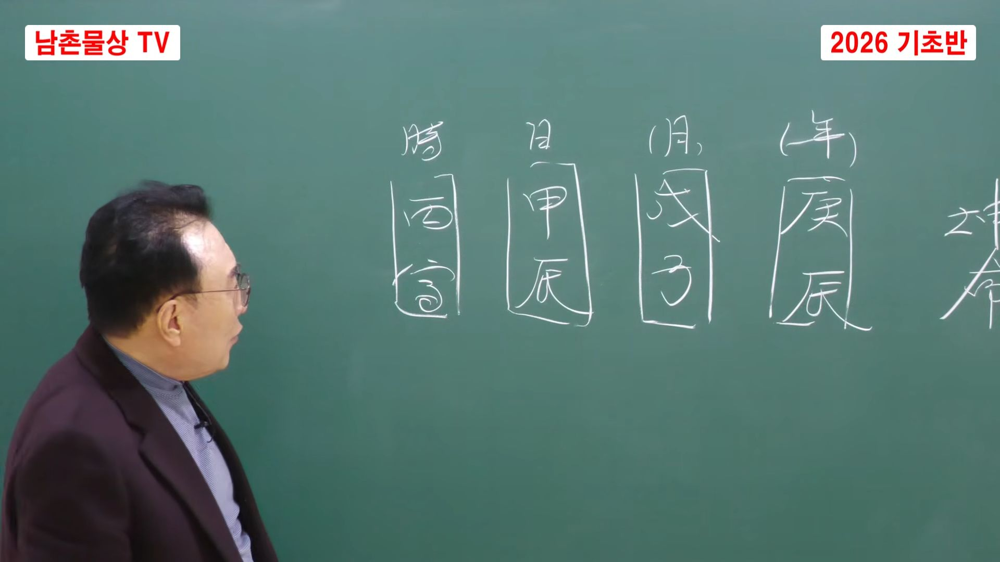

남촌물상TV 전체 문서 › 동영상 V0175
누구나 쉽게 배우는 남촌물상론사주 기초반 3강

| 문서 번호 | V0175 (동영상) |
|---|---|
| 영상 URL | https://www.youtube.com/watch?v=Az0VRHhXIws |
| 영상 ID | Az0VRHhXIws |
| 게시일 | 2026-03-08 |
| 길이 | 20:13 (1213초) |
| 조회수 | 351회 (수집 시점 기준) |
| 카테고리 | Education |
| 자막 | ko (자동생성) |
| 수집 시각 | 2026-08-30 17:03 (KST) |
영상 설명 (YouTube 설명 원문 그대로)
남촌 김대영교수 사주상담
010~3139~6645 예약필수
사주상담 # 물상론 사주# 명리학# 성명학# 궁합# 택일#
물형상# 운명학# 남촌물상론#
전체 자막 (473구간 · 타임스탬프 클릭 시 해당 장면으로 이동)
[0:00]자, 안녕하세요. 저 기초강이 남촌
[0:03]물상놈 상강을 시작했습니다. 오늘은
[0:06]직접적인 목부터 시작을 해서 화까지
[0:09]끝나야 되는데 목화 토금수를 한번 해
[0:12]볼 계획입니다. 자, 우선 목이라는
[0:14]글씨를 한번 봅시다. 자, 목.
[0:17]자,이 목이라는 나무 이건 무조건
[0:20]우리 물상론에서는 목이란 글씨는
[0:23]나무다 하면 나무다고 생각하면 돼요.
[0:25]나무다고. 그러면 나무가 아까 종류가
[0:29]두 가지 있다 그랬어요. 나무가 자
[0:31]나무는 아까 큰 감목에 나무가 있고
[0:35]작은 을목의 나무가 있다라고 얘기했다
[0:38]그 말이에요. 전 시간에 둘째 시간에
[0:40]갑을 배웠다 그 말입니다. 그러면이
[0:44]갑목의 나무는 우리가 얼름 생각할 때
[0:46]어떻게 생각하냐? 물상눈에서는 큰
[0:48]나무로 생각해. 큰 나무. 그럼이
[0:51]감목은 큰 나무가 필요했다. 큰
[0:53]나무. 을목은 작은 나무 그럼 자
[0:57]여러 가지 종류했죠. 그러면이
[0:59]감목에 뿌리는 아까 기초식을 뭐
[1:01]배웠어요? 자 우리가 장 지난 시간에
[1:04]감목이 뿌리는 뭔목이라 그랬어?
[1:06]인목이라 그죠? 인목. 자 인목.
[1:08]그렇죠? 인목이라 배웠다 그
[1:10]말이에요. 그러면 을목의 뿌리는 뭐라
[1:13]보세요? 이건 묘목이라고 배웠다이
[1:15]말입니다. 그러면 이제 목이라는이 두
[1:18]글씨 설명드렸죠? 이것만 아시면 이제
[1:21]감목, 을목, 큰 나무, 작은 나무
[1:23]요렇게 이제 아시면 돼요. 그러면
[1:26]우리가 이제 목이라는이 감목부터 먼저
[1:29]하기 때문에 갑목이란 나무가 살아가는
[1:32]조건이 이게 세상 사는 사주 보는
[1:34]이치예요. 우리가 불쌍론에 볼 때
[1:36]갑목이 살아 내가 목이라는 사람으로
[1:38]보고 살아나가는 이치를 설명한게
[1:42]물상론이다 그 말입니다. 그러면 천간
[1:45]우리가 연월 1시에서 목이라는 글씨가
[1:49]나의 일간으로 보시면 돼요. 나가
[1:51]일간이다. 나라고 생각하시면 된다.
[1:54]그러면이 몽이라는 나무가 땅 나무가
[1:57]살 때는 어디 살아야 되냐 그
[1:58]말이에요. 어디 살까요? 우리가 어디
[2:00]살아요? 땅에 살죠. 그러면 땅이라는
[2:04]글씨가 있어. 그럼 땅이라는 것은
[2:07]무토의 넓은 땅에 사느냐 구역이 적은
[2:10]작은 땅에 사느냐 차이예요. 무토의
[2:13]나무는 넓은 땅에서 큰 땅에
[2:15]살아야죠. 적은 땅 사람이 죽잖아요.
[2:18]그렇잖아요. 자, 그러면 여기 큰
[2:20]땅에 살면
[2:22]사는 조건이 여러 가지가 있어요.
[2:25]자, 우리가 자연의 자연 이치를
[2:26]봐봐요. 산에 가면은 큰 땅이 큰
[2:29]나무가 잘 산 나무가 있고 바위에서
[2:31]못 산 나무가 있어요. 그것이 인생
[2:33]사립 똑같은 거예요. 어떤 사람은
[2:35]토지 좋은 땅에서 참 나무가 잘 큰
[2:38]나무가 있고 세상 어떤 나무는
[2:40]바위에서 그냥 목숨을 부지하고자
[2:43]하늘의 땅에 비만오게 기다리고 있는
[2:45]그런 나무도 있다. 이것이 인간
[2:46]세상사예요.
[2:48]누가 갑목이 나무 형태를 조건주에 잘
[2:51]사느냐는 출세한 사람이고
[2:53]작은 나무를서 출세 크지 못하고 맥날
[2:57]큰 나무 밑에 얼러지는 사람은 수세를
[2:59]못 한 사람으로 이해도 되잖아요.
[3:01]이것이 이제 우리가 물상적인 해석으로
[3:03]기하면 된다. 나중에 물론 작은
[3:05]나무가 사는 방법이 없어 있죠. 큰
[3:08]나무는 좋지만 좋지 않는 것도
[3:10]있어요. 큰나무는 우리 어떻게 한번
[3:12]봐 봐요. 큰 나무. 큰나무 어써요?
[3:16]얼른 표불어 비워서 큰 나무 비워서
[3:19]뭐요? 목재도 하고 건축도 하고 써
[3:22]먹어 버잖아요. 그럼 큰나 오래
[3:24]살아? 못 살아? 오래 산과 동시에
[3:27]싹뚝 잘라간다이 얘기야. 근데 작은
[3:30]나무이을 얼목의 나무 봐. 을목에 자
[3:33]을목의 나무는
[3:35]산 꼭대기가 을목이 많아요. 밑에
[3:37]나무가 을목이 많아요. 무료할 때.
[3:39]자 우리는 작은 나무가 산 꼭대기가면
[3:42]큰 나무가 없어요. 다 작은 나무지.
[3:45]그렇잖아요. 저 상꼭대기 높은 상끝때
[3:47]알프상 높은 데가 큰 나무 있어요?
[3:49]없어요? 밑에가 있지. 토질이 좋은
[3:51]데가 큰 나무 산다 그 말입니다.
[3:54]그러면
[3:56]세상 사는 건저 작은 나무는 같이
[3:58]살고 큰 나무 잘 산 거 이거
[4:00]아닙니다.
[4:02]자 작은 나무는 어디다 쓸 수
[4:04]있어요?
[4:06]우리 물 사이에서나 보면 분제 같은
[4:08]쓰잖아요. 분제 얼마나 비싸요?
[4:11]비싸요? 비싸요? 비싸잖아요.
[4:13]그러니까 큰 나무가 사는 방법이 있고
[4:15]작은 나무가 사는 방법이 있다.
[4:16]이것이 인생사야. 이런 관계를 우리가
[4:20]물상적 해석으로 해서 사람이
[4:22]살아나가는 방법을 제시한 학문이 바로
[4:25]남촌 물상도이다.이 말입니다. 자,
[4:28]이해하셨죠? 자, 그러면 일단 갑목이
[4:31]살아나갈 때 큰 땅에서 사느냐 작은
[4:34]땅에 사느냐를 구별해서 보자. 그
[4:36]말입니다. 그러면 감목이 큰 땅에
[4:39]살게 되면은 편하게 큰 땅에서 뿌리를
[4:42]내면 크게 살 수 있다 말입니다.
[4:44]감목 일간이 그게 사주가 잘 보시면
[4:47]여기서 보시면
[4:49]자 사주가 여기가 무토라는 글씨가
[4:51]있어요.음 무토가 사주네 여덟 글자
[4:54]중네 중에 첨가네 글자인데네 개
[4:56]중에서 무토가 있어요. 그럼 이거
[4:59]연에 있거나 연거나 연월에 있거나 다
[5:02]구별 없어요. 그냥 보자 그
[5:04]말입니다. 그러면이 감목은 큰 땅에
[5:07]사니까 굉장히 좋겠네라고 했어요.
[5:10]좋겠네. 그러면 자 나무가 살기는
[5:13]뭐가 필요해요? 나무가 살려면 물이
[5:15]있어야 살잖아요. 물이. 그러면
[5:18]여기가 오행에서 볼 때 우리는 그
[5:20]식간 공부를 할 때 나중에 이제 지금
[5:24]공부를 다 안 했습니다.이 재관 재화
[5:27]관을 알 그 공부를 해야 되는데 그냥
[5:29]하면서 하겠습니다. 어 그러면 자
[5:32]목의 목의 재물은 무엇이냐? 목의
[5:35]재물은 사실 목은 목국토 내가 극한게
[5:41]재물이 되는 거예요. 내가 극한 거.
[5:44]그러면 남자가 본 시대 여자를 극게
[5:47]산에서 극했잖아요. 목 금긍목
[5:49]목극토했단 말이에요. 그러면이 목이란
[5:52]것이는이 토가 돈이다. 이렇게
[5:54]인식하면 돼요. 뭐 돈이
[5:55]기억겠습니까? 근데 일단 우리가 사주
[5:58]공부하는데 목의 일가는 토가
[6:02]돈이다라고 정하자 그 말입니다.
[6:04]정했기 때문에 토가 되는 겁니다. 자
[6:06]그러면 땅에서 나무로 생겨가
[6:07]돈이에요. 그럼 나무가 살기 위해서는
[6:10]무토에 살면 돈이 돼? 안 돼? 될
[6:13]거 아니에요?
[6:14]내가 돈을 돈 위 돈 위에서 나무가
[6:16]사니까 내 돈이지. 그럼 이게 이게
[6:18]이게 재물이다. 재 이걸 뭐라고 하냐
[6:20]우리는 재라고 돈 돈
[6:24]돈이다.음
[6:27]그러면 자 목국토 돈이 됐다. 이것이
[6:29]이제 내가 극하는게 돈이었다고
[6:31]생각하시면 된다. 자 그다음에
[6:34]그다음에
[6:35]나무가 살아나가는데
[6:37]물이 있어야 되잖아요. 물. 그러면
[6:40]임수라 물이 있어야 돼. 임수 큰
[6:41]물. 나무는 큰 나무는 물을 많이
[6:44]줘야 되잖아요. 근데 물 조금 더
[6:46]나무 크? 안 커? 안 크잖아.
[6:48]죽으려 안 큰나. 그니까 큰나무는
[6:51]물을 많이 주기 때 임수가 필요했다
[6:52]이렇게 보시면 돼요. 그러면이
[6:57]갑목 일간의 임수는 수생목 나무를
[7:00]도와주기 때문에 인성이라고 그래.
[7:02]고전에 인성. 어. 그러니까 이것을
[7:04]우리가 자 가정치 누구 우리 살다
[7:06]보면 누구를 제일 도와줘요? 누가
[7:08]나를 도와줘요? 어렸을 때 엄마가
[7:10]나를 키우잖아. 그게 이게 수생목
[7:12]나무 켜 주는게 엄마야. 이게
[7:14]엄마야. 이렇게 이해해도 된다 그
[7:16]말입니다. 그래서 이건 수생목 관계
[7:19]인성으로 보고 그러면 자 볼까요? 자
[7:22]결론을 쭉 보시면 나무가 돈 벌기
[7:26]위해서 땅에 살았다.
[7:29]땅에 살았는데 물이 없으면 나무
[7:32]안큼면 돈이 돈 벌려 안 벌려? 안
[7:33]벌리겠네. 생각이 날 거 아니에요.
[7:36]돈 못 버는 거예요. 왜? 남무가 그
[7:38]땅에 살아서 돈이 척 성장해야 돈이
[7:41]벌 건데 탕에서 나 못으면 돈이 돼
[7:44]안 된다 그 말이에요. 그러면 자
[7:45]사주에 이렇게 임수가 있는 사주는이
[7:48]무토가이 무토 땅에 나 내이 갑목이
[7:52]여기에 심어졌으니까 물을 주니까 잘
[7:54]크다. 돈 잘 벌어놓 잘 보내 이렇게
[7:57]된다 그 말입니다. 이것이 소위
[7:59]사주가 돈을 버냐 보냐는 물상론의
[8:02]특징이에요. 그래서 갑목이 살아나가는
[8:04]데는 첫째 조건이 땅이 있어야 되고
[8:08]땅을 내기 위해서 나무가 심어지면
[8:10]물이 있어야만이 나무가 성장한다.
[8:13]그럼 나무가 성장만 하면 다 하냐 그
[8:16]말이야. 성장만 하면 나무가 성장만
[8:19]해서 뭐예요? 꽃을 피하지 열매를
[8:22]열매 꽃을 피할 거 아닙니까? 이게
[8:24]이제 뭐가 필요해? 결과적으로 여기에
[8:26]이렇게 병화가 필요하다 그 말이야.
[8:29]병화가. 그러면 이제 사주 구성으로
[8:30]보면은 이게 사주 현가이 여덟째
[8:33]아니에요. 이걸 연이라 그래. 연거
[8:36]애를 들자 말이야. 연 월 자 1시
[8:40]10 시 이렇게 하면 이제 여자가
[8:43]되네. 그죠? 그러면 이거 된
[8:46]거예요. 그럼 자 간단하게 생각해서
[8:49]이게 일간이에요. 내가 나야. 나는
[8:53]여기의 자리에 나무에 심었다. 그러면
[8:55]여기는 무슨 자리? 국가자리. 대자리
[8:59]여기는 부모 형제 자리 자 밑에가
[9:02]있어요. 요렇게 사시가 돼 있을 거
[9:04]아닙니까? 지지가 돼 있을 거라 그
[9:06]말이야. 아까지지 배웠잖아 우리가
[9:07]지난 시간에. 그러면 여기에서이
[9:10]나무가 땅은 여기서 심어졌어요.
[9:13]그러면 여기는 국가 자리 밑에서
[9:16]심어졌다 그 말이에요. 그죠?
[9:19]국가자리 대기업 자리에서 한간 밑에
[9:22]심어졌어요. 그러면 자 우리는 해석할
[9:25]때 여러 가지로 해석할 수 있어요.
[9:27]나무가 살아난 방법이 자 꽃을 피다
[9:30]간단해요. 더 세무적인 얘기는 들으면
[9:32]복잡하니까 나중에 하기로 하고 나무가
[9:35]꽃을 핀다는 얘기는 공부를 잘했네라고
[9:39]할 수도 있다 그 말이야. 그럼
[9:41]공부를 잘하면 어디로 가야 돼?
[9:43]여기에서 꼽혀줬으니까 여기 가겠네.
[9:45]대기업이나 공직의 국가의 자리에서
[9:47]일하겠네. 이렇게 사주고 직업이 나온
[9:49]거예요. 어려운게 아니잖아요. 직업
[9:51]찾 쉬워요. 그래서이 갑목이라는 나무
[9:54]하나를 놓고 봤을 때 갑목이 살아나건
[9:58]좋고 선관에 이런 구상이 돼 있으면
[10:00]이건 아주 기격서 좋은 사주야. 잘돼
[10:03]구성이 잘 짜진 사주라 그 말이에요.
[10:06]내 일간에서 내가 갑목이이
[10:09]넓은 땅에 뿌리를 내리고 살는데 물을
[10:13]주니까 나무가 잘 컸다. 근데 국과
[10:16]자리에서 태양이 떠서 꽃을 피어
[10:17]줬네. 얼마나 좋아요. 그럼 나무가
[10:20]살아는 조건, 생장 조건이 다 되는
[10:22]거예요. 이게 바로 감목이 살아나가는
[10:26]방법이에요. 자, 그러면
[10:29]나무라는게 물만 조르면 그냥 확
[10:31]크잖아요. 잘 커.
[10:34]그러면 나무가 좀 예쁘게 맨들면
[10:36]어떻게 해야 돼? 가지를 잘라주고
[10:38]전지가 잘라주고 이쁘잖아. 이게
[10:40]뭐예요? 금이에요. 금. 그럼 쉽게
[10:42]얘기해서 금운이라는게네 가지
[10:45]사주가는데 금이라는 운이 사주에서
[10:48]대운 소운이 있잖아요. 세운이 있다.
[10:51]그럼 대운에서 금이 왔다. 이럴 때
[10:54]사주를 대주 사주를 보는 거예요.
[10:56]이럴 때 그래서 감목이 살아 금이
[10:59]왔다는 얘기는
[11:02]내가 칼 자료가 되고 이거 칼이라고
[11:04]그랬어. 아까 경금 우리가 금이라
[11:06]그랬어요. 사주 경금 신금 두 가지
[11:08]있다 그랬어. 그러면이 경금은 내가
[11:11]칼 자루를 지우기 내가 권력이 생겨,
[11:13]안 생겨? 생겼다 그 말이에요.
[11:16]칼자루 진 놈이 임자지. 그렇지
[11:18]않겠어요? 자, 칼이 왔는데 칼루가
[11:21]내가지고 있으면 내가 임자지. 내가
[11:23]칼이랑 내가 움직이는 칼 그러면 자,
[11:26]전체적인 해석해 보 사주 한번
[11:27]봅시다. 사주 볼 때 이렇게 보면
[11:29]돼. 나는이 갑목이 제일 좋은 것은
[11:32]뭐냐?
[11:33]돈을 벌기 위해서는이 무토당에 나무가
[11:35]심어져야 되고 그다음에 사주 있는
[11:37]물을 쓰니까 나무가 커졌다. 근데
[11:40]국가 자리에서 꽃을 표지 나는 국가에
[11:42]일을 해야 되겠네. 그럼 국가
[11:44]공무원을 하거나 대기업에서 일할 수
[11:46]있는 사주가 됐다 그 말이야. 그런데
[11:49]운이 그운이 왔다. 허허. 그러면
[11:51]내가 뭐예요? 칼 자루 칼이 왔고
[11:54]내가 칼 몽에 칼 자루를지고 있으니
[11:56]내가 권력을 자꾸 흔들겠네. 이렇게
[11:59]사주 해석하면 맞다 그 말입니다.
[12:01]그럼 내가 구책을 받을 때 갑목이
[12:03]칼쳐준다는 얘기는 내가 그 직책에서
[12:08]지지자가 되고 내 지시를 따른 사람이
[12:10]있지 않겠데 그러면 이때 바로 이제
[12:12]승진이 될 수 있다라고 본다 그
[12:14]말입니다. 이제 이런 걸 가지고 사주
[12:16]목이 살아나가는 갑목이 살아나가는
[12:19]방법을 제시해서 설명을 드리고 있다.
[12:23]이게 이제 천간만 가지고 지금 우리가
[12:26]연월 시 감목이 살아나가는 방법에
[12:29]대해서 설명을 들었으니까 여러분들이
[12:31]지금 볼 때 이해하셨어요? 못하어요.
[12:33]이해가 되셨을 겁니다. 음. 그래서
[12:36]이해가 잘 안 되신 분들은 밑에 댓글
[12:38]한번 달아 보세요. 댓글 다시 내가
[12:41]또 설명을 또 설명을 드리지. 그래서
[12:44]댓글도 잘다고 댓글 좋아서 머리
[12:46]좋아요 구독도 눌러 줘야 되는 거
[12:48]아니겠습니까? 그래야 내가 더 힘이
[12:50]날 거 아니에요. 그래야 김이 김대현
[12:52]교수 힘이 나야 다음 시간 더
[12:53]자릅니다. 더 꼼꼼히 밝혀주고. 음.
[12:56]그 여러분들은 꼭 좋아요 구독을 꼭
[12:58]누르셔야 됩니다. 그래서 모르시면
[13:01]밑에 댓글 써 주면 내가 해 줘.
[13:03]아이 구독도 안 눌렀는데 무슨 놈은
[13:05]내가 댓글 답 답을 들겠어요? 안
[13:07]드리지. 꼭 하셨죠? 그거 하셔야
[13:09]됩니다. 여러분은 그래야만이 제가
[13:11]흥이 나고 더 잘할 수 있는 기회를
[13:12]가지고이 다음 시간에 더 열정적인
[13:15]강의를 해 드리겠습니다. 그
[13:16]말입니다. 자 아시겠죠? 자,
[13:19]앞전에서 배웠던 청간을 다
[13:21]배웠습니다. 그래서 실제 사주를
[13:24]가지고 한번 배웠던 감목 일간을
[13:26]가지고 설명을 드릴테니까 간단히
[13:28]사주는 방법을 제가 설명을
[13:30]드리랍니다. 자, 여자 사주, 경진,
[13:35]무자, 갑진 병인지이다. 그럼이
[13:38]보보시면 연애가 경진 그다음에 무월리
[13:42]무자 일간의 갑진 그럼 결국 이게
[13:45]이게 나예요. 나 나란
[13:48]말이야. 나 그다음에 여기는 무슨
[13:51]자리야? 아까 대기업자리 국가 자리
[13:54]이렇게 했다 국가자리 대기업자리
[13:56]그다음에 여기는 뭐야? 자식자리
[14:00]여기는 부모 형제 자리 이렇게 그러면
[14:03]자 국가 대기업자리 부모 형제 자리
[14:06]내 자리 내 남편 자리 내 자식자리
[14:09]이렇게 정해진 거예요. 그래서
[14:10]연월시라 그 말이에요. 그러면이 사람
[14:13]사주는 언론 보시면 굉장히 좋 좋은
[14:15]것같이 보이죠?
[14:16]자, 갑진이란 거 나예요. 갑목이
[14:19]나예요. 근데 갑목의 관은 누구예요?
[14:22]관은 감목 여자니까 갑목의 관은
[14:26]남자가 관이기 때문에 내 금극목 나를
[14:29]극하는 것이 관이에요.이 경금이
[14:32]관이다. 된다 관. 자, 그럼 이게
[14:35]뭐예요? 나의 남편도 되고 결과적으로
[14:39]나의 관도 되고 그까 관이라는 것은
[14:43]결혼하기 전에는 내 친정 아버지가
[14:47]관이 되고 결혼하게 되면 내 남편이
[14:51]관이 된다. 이것을 꼭 잊어서 안
[14:53]된다 그 말입니다. 그걸 상식적으로
[14:55]알아줘야 돼요. 그렇게 되면
[14:58]감목에 가는 결혼하기 전에는 저기
[15:01]경금인데 관이에요. 그럼 아버지가
[15:03]그냥 아버지가 뭐 한 사람이야 얼어.
[15:05]아버지 공직 자리도 맞다 그 말이야.
[15:07]우리 아버지는요 국가 자리 대기업
[15:09]자리에서 공직이나이 일할 수 있는
[15:12]사람이야. 해도 맞아. 그럼 누구냐?
[15:15]우리 아버지는 국가 자리에서 일하는
[15:16]사람. 이렇게 해서 간다게 볼 수
[15:19]있는 거예요. 자 그러면 내 남편을
[15:21]어쩌냐? 결혼하면 내 남편도 그런
[15:23]사람일 수도 있어요. 그런데 아까
[15:26]갑목이 살아나가는 방법이 뭐냐 그
[15:29]말이라고. 아까 배울 때. 그럼
[15:31]갑목이이 무토해 살잖아요. 월에 월
[15:35]그러면 물상종 해석할 때는 갑목은
[15:39]나는 칼 자루고 여기 칼은 국가제기
[15:42]때문에 국가를 이용한 칼자를 내지고
[15:45]있다고 생각보. 그런이 직업을 가지면
[15:47]좋다 그 얘기예요. 여자라도 그러면
[15:49]자 여기에는 우리는 큰 칼을 쓸 수
[15:53]있는 데는 뭘까? 만약에이 사람의
[15:55]내가 적성과 진로 결정을 한다면
[15:59]나는 칼차루, 큰 칼차료를지고 있는
[16:01]사람 국가에서는 큰 칼이 나한테
[16:03]있어.이 경우는 뭐냐? 국가의 칼을
[16:06]내가 움직일 수 있는 사람이에요.
[16:08]그러면 내가 권력을 가진 공무원을
[16:10]하든지 군인을 하든지 큰 총칼하고
[16:13]싸울 거 아니에요. 그럼 뭐랄까?이
[16:16]사람은 여군으로 갔으면 성공할 수
[16:18]있는 사주예요. 간단히 보면. 무슨
[16:20]얘기냐?
[16:22]나는 칼 자인데 국가에서 큰 칼이
[16:25]갖고 있어요.
[16:27]칼을 줬어. 그럼 내 칼을 치고
[16:29]움직인 거야. 그러면 자, 큰 칼을
[16:31]쓰는 옛날 뭐래요? 장수들이 조그만
[16:34]칼 써요. 큰 창 큰 칼 쓰잖아.이
[16:36]이 국가의 국가를 다루는 소위 군인,
[16:40]경찰 이런 사람들이 직업을 가지면
[16:42]좋다 그 말이에요. 간단히 되자로
[16:44]쉽게 직업도 금방 찾고 금방 뭐
[16:46]할래도 찾고 다 찰 수 있는 거예요.
[16:48]자, 그러면이 사람은이 사람은 나무가
[16:52]살 때 땅이 있어. 그러면 자, 땅이
[16:55]있고 물이 얻어 있느냐? 물이 물이
[16:59]여기에 보면 항식이겠죠. 우리는 천가
[17:02]경급 뿌리는 아까 뭐라고 배웠어요?
[17:03]우리 지난 시간에 경뿌리는 신금으로
[17:06]배웠잖아요. 신금이다. 여기다 신자를
[17:08]써 보자. 어허. 신자진. 삼앞에서
[17:13]신자진. 수국이 물이 됐다 그
[17:15]말이에요. 그러면 자 내가 살아나갈
[17:18]때이
[17:19]나무가 여기 심어졌는데 물을 막
[17:22]만들어 주네. 그 부모때 어릴 때
[17:24]여기는 20 40 60 내 기념을
[17:28]본다면 월까지는 내가 태어나기
[17:31]전이지. 그러면 내가 태어난 날부터
[17:33]내가 내가 태어난 거예요. 그러니까
[17:36]쉽게서 부모에서 부모의 영역에서 내가
[17:40]나무를 심어서 성장 살고 있다면
[17:43]부모가 물을 잘 커고 다듬네. 그러면
[17:47]환경이 좋은 환경이야, 안 좋아요?
[17:49]괜찮은 환경 살았네. 이렇게 볼 수
[17:51]있는 거예요. 그럼 괜찮하다는 얘기는
[17:53]뭐냐면
[17:55]사람마이 그 환경을 어떻게 살았냐에
[17:58]따라서 팔자가 바뀌는 거예요. 팔자가
[18:00]안 바뀌는 거 아니에요. 인생일 때
[18:02]누구를 만나느냐에 따라서 팔자가 바뀔
[18:04]수 있고 내가
[18:07]어느 환경에 살았냐에 따라서 팔자가
[18:10]바뀔 수가 있는 겁니다. 그러니까
[18:12]국가 자리에서 살았고 계기업자 살았고
[18:14]아버지가 국가 공직자고 지지에 물을
[18:17]켜서 내가 나무가 성장할 수 있는데
[18:19]꽃만 피면 되는데 시지에 꽃 병어가
[18:22]있어요.
[18:23]그러면 자 꽃을 펴줘. 그럼 여기에서
[18:26]꽃을 핀다는 얘기는 자식자리에서 꽃을
[18:29]피고 있다 그 말이에요.
[18:31]내가 공부를 일찍 병어가 여기쯤이
[18:33]병화가 있었으면은 꽃도 일찍 폈을 거
[18:36]아니에요. 꽃을 못 폈지.
[18:38]여기에서 해석이 달라질 수가 있다.
[18:41]모든 환경은 다 됐는데 꼽힐 것이
[18:43]없어. 늦게 꼽혀.
[18:45]늦게 꼽히면 뭐예요? 자식자를 꼽힌
[18:48]거 아니에요. 늙을 때 늙을 때
[18:51]그러면 누가 내가 사실 공부를 잘할
[18:54]수가 없었다는 얘기예요. 늦게 고시피
[18:57]내가 공부를 잘했겠어요? 못했지.
[18:58]여건이 안 맞았지. 공부를 할 수
[18:59]있거지. 안 됐다. 그렇기 때문에이
[19:02]자이 자식이이 자식을 낳고 나면 첫째
[19:07]둘째 자식을 낳고 나면 첫째는
[19:09]이거예요. 인목 나하고 같은 뿌리
[19:12]딸. 그럼 꽃을 펴 준 것은 이게
[19:15]나한테 꽃을 표준게 둘째 자식이
[19:17]나한테 둘째 자식을 낳고 나면 내가
[19:20]꽃이 뼈 이때부터 내가 살기가
[19:22]좋아졌네. 이렇게 할 수 있는
[19:23]거예요. 아셨죠? 그래서 물상론에서는
[19:26]사주를 용신 격국 지장 포테프
[19:28]신사론을 쓴게 아니라 자연의 이치를
[19:31]가지고 쉽게 네가 뭐를 잘할 수 있고
[19:34]너는 사주 구성에 뭐 오면 뭐가 잘될
[19:37]수 있어 하는 것을 설명을 드리는데
[19:40]대운에 따라서 운이 오고 안 오고
[19:43]따라서 사람이 삶이 바뀔 수 있고
[19:45]바꿔진다 그 말이에요. 그래서 사주
[19:47]구성은 항시 여러분들이 볼 때 이렇게
[19:50]쉽게 사주를 풀 수 있고 정확하게
[19:53]집어 현실을 세 개 현실에 맞는
[19:55]사주가 돼 돼야만이 정확성과 여러분이
[19:59]바로 공부하기 쉬운 남촌 물상론이 될
[20:02]수 있다이 말입니다. 아셨죠? 그래서
[20:04]이거는 간다임 대가 우리가 감목을
[20:07]배웠기 때문에 실전 사주로 한번 풀어
[20:10]드는 걸로 이해하시면 되겠습니다.
[20:12]아셨죠?
칠판 원국 판독 (영상 프레임을 AI가 시각 판독 · 원판 대조 필수)
미확인
천간
丙
천간
甲
천간
戊
천간
庚
지지
寅
지지
辰
지지
子
지지
辰
판독 신뢰도: 높음
판독 노트: 좌→우 時日月年 완성 판서(丙寅時 甲辰日 戊子月 庚辰年), 8자 선명, 2026 기초반 · 시점 14:12 · 해당 장면 보기↗
자막은 YouTube에서 제공하는 한국어 자동음성인식(ASR) 트랙의 원문입니다. 고유명사·한자 용어·숫자 표기에 자동인식 특유의 오류가 있을 수 있어, 원문을 가능한 한 그대로 보존했습니다. 위에 칠판 원국 판독 섹션이 있는 영상은 화면 프레임을 AI가 시각 판독한 것으로 신뢰도 표기를 확인하고, 없는 영상은 화면 도표가 문서에 포함되지 않습니다.